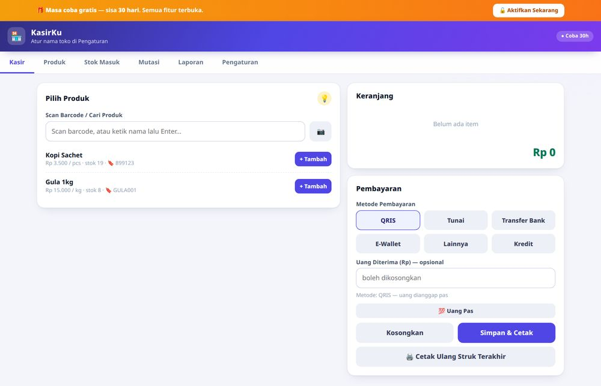
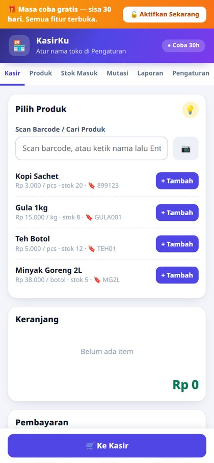

Catat penjualan, stok, dan HPP rata-rata secara otomatis. Tahu laba asli tiap hari — bukan sekadar uang masuk. Buka di HP, tablet, atau laptop, langsung pakai.
Kalau iya, kamu tidak sendirian. Ini keluhan yang paling sering kami dengar dari pemilik warung & toko.
Tanpa tahu HPP, kamu tidak tahu untung atau rugi sebenarnya.
Buku hilang, tulisan tidak terbaca, tidak ada rekap.
Langganan bulanan, padahal fiturnya tidak perlu semua.
Aplikasi online jadi tidak bisa dipakai saat internet lemah.

Bukan fitur berlebihan — fokus ke yang benar-benar dipakai UMKM.
Cari produk, tambah ke keranjang, hitung kembalian otomatis. Pilih metode bayar (Tunai/QRIS/Transfer/E-Wallet).
Pindai barcode dengan kamera/pemindai — produk langsung masuk keranjang. Tanpa alat? Ketik kodenya saja.
Setiap barang masuk, modal dihitung ulang otomatis. Laba selalu akurat.
Edit produk kapan saja. Hapus produk aman — riwayat penjualan & stok tetap tersimpan (arsip).
Catat barang rusak/hilang/retur, dan sesuaikan stok dengan hitungan fisik.
Omzet, HPP, laba, dan nilai stok — harian, custom tanggal.
Lihat produk dengan jumlah penjualan terbanyak dan produk penyumbang laba terbesar berdasarkan periode laporan. Cocok untuk membantu menentukan prioritas stok dan evaluasi penjualan.
Unduh laporan ke Excel (.xlsx asli) atau PDF siap cetak. Bukan CSV.
Printer thermal 58/80 mm, atau cetak lewat dialog browser. Tidak punya printer? Tetap bisa jadi PDF.
Tanpa internet setelah dibuka. Hemat kuota, tetap jalan saat sinyal mati.
Unduh & pulihkan data kapan saja. Data milikmu, bukan milik kami.
Data tidak otomatis tersinkron ke cloud. Simpan backup berkala di lokasi terpisah karena penghapusan data situs/browser dapat menghapus data lokal.

Tanpa langganan bulanan. Tidak ada biaya tersembunyi.
Cocok untuk: toko kelontong, warung, kafe kecil, toko baju, apotek, dan UMKM lain yang jual barang.
KasirKu dirancang agar bisa dipakai offline. Data operasional disimpan pada browser/perangkat yang digunakan, bukan otomatis di server cloud.
Data di HP tidak otomatis sama dengan data di laptop atau HP lain. Gunakan Backup dan Restore untuk memindahkan data.
Menghapus data situs/penyimpanan browser atau mereset perangkat dapat menghapus data lokal KasirKu. Menghapus riwayat saja biasanya berbeda, tergantung opsi yang dipilih.
Ekspor file Backup (.json) secara rutin dan simpan salinannya di tempat terpisah. Backup manual tidak otomatis dibuat oleh aplikasi.
Untuk pemakaian harian tidak perlu internet sama sekali. Internet hanya dipakai sebentar saat kamu mau membeli/mengaktifkan lisensi.
Data operasional disimpan secara lokal di penyimpanan browser pada perangkat yang digunakan, bukan otomatis di cloud. File HTML aplikasi terpisah dari data transaksi. Karena tidak ada sinkronisasi otomatis, data di HP dan laptop berbeda kecuali dipindahkan melalui backup dan restore.
Menghapus riwayat browsing saja biasanya tidak menghapus data aplikasi. Namun, jika kamu memilih menghapus data situs, penyimpanan browser, atau data aplikasi, data KasirKu yang tersimpan lokal bisa ikut terhapus. Reset perangkat atau uninstall browser juga dapat menyebabkan kehilangan data.
Gunakan menu Backup (.json) secara rutin, simpan salinan di lokasi lain seperti komputer atau penyimpanan cloud pribadi, dan pastikan file backup dapat dipulihkan melalui menu Restore. Backup tidak berjalan otomatis; pengguna bertanggung jawab menyimpan salinannya dengan aman.
Tidak ada. Bayar sekali, pakai selamanya. Termasuk perbaikan bug & pembaruan.
Toko kelontong, warung, kafe kecil, toko baju, apotek, dan UMKM lain yang menjual barang.
Lisensi dapat dipindahkan melalui menu Ganti Perangkat. Data penjualan tidak ikut pindah otomatis: buat backup JSON di perangkat lama, pindahkan file tersebut ke perangkat baru, lalu gunakan Restore. Pastikan backup tersimpan dengan baik sebelum mengganti perangkat.
Bisa. Tersedia Excel .xlsx asli (angkanya bisa dihitung ulang di Excel/Google Sheets/WPS) atau PDF siap cetak. Bukan CSV.
Klik tombol Telegram di halaman ini, lalu bayar via QRIS/e-wallet. Kunci lisensi terbit otomatis — aplikasi langsung aktif. Ada juga bantuan setup 1-on-1.
Tanya-tanya dulu juga boleh. Kami balas cepat di Telegram.
💬 Chat Kami di Telegram